Last updated: 2026-08-19
Checks: 7 0
Knit directory: dickinson_power/
This reproducible R Markdown analysis was created with workflowr (version 1.7.2). The Checks tab describes the reproducibility checks that were applied when the results were created. The Past versions tab lists the development history.
Great! Since the R Markdown file has been committed to the Git repository, you know the exact version of the code that produced these results.
Great job! The global environment was empty. Objects defined in the global environment can affect the analysis in your R Markdown file in unknown ways. For reproduciblity it’s best to always run the code in an empty environment.
The command set.seed(20260107) was run prior to running
the code in the R Markdown file. Setting a seed ensures that any results
that rely on randomness, e.g. subsampling or permutations, are
reproducible.
Great job! Recording the operating system, R version, and package versions is critical for reproducibility.
Nice! There were no cached chunks for this analysis, so you can be confident that you successfully produced the results during this run.
Great job! Using relative paths to the files within your workflowr project makes it easier to run your code on other machines.
Great! You are using Git for version control. Tracking code development and connecting the code version to the results is critical for reproducibility.
The results in this page were generated with repository version 70363c3. See the Past versions tab to see a history of the changes made to the R Markdown and HTML files.
Note that you need to be careful to ensure that all relevant files for
the analysis have been committed to Git prior to generating the results
(you can use wflow_publish or
wflow_git_commit). workflowr only checks the R Markdown
file, but you know if there are other scripts or data files that it
depends on. Below is the status of the Git repository when the results
were generated:
Ignored files:
Ignored: .DS_Store
Ignored: .Rhistory
Ignored: .Rproj.user/
Ignored: analysis/.DS_Store
Ignored: analysis/.Rhistory
Ignored: analysis_to-fix/.DS_Store
Ignored: data/.DS_Store
Ignored: data/FY25 Main Meter Data.xlsx
Ignored: data/building_list_FY25_updated.xlsx
Ignored: data/graph_data_life_exp.csv
Ignored: data/housing_counts.csv
Ignored: keys/.DS_Store
Ignored: output/annual_kwh.csv
Ignored: output/building_check.csv
Ignored: output/building_check.xlsx
Ignored: output/buildings_graph.csv
Ignored: output/daily_kwh.csv
Ignored: output/kwh_academic_2026-03-16.csv
Ignored: output/kwh_academic_2026-03-17.csv
Ignored: output/kwh_academic_2026-03-18.csv
Ignored: output/kwh_academic_2026-03-22.csv
Ignored: output/kwh_academic_2026-03-23.csv
Ignored: output/kwh_academic_2026-03-25.csv
Ignored: output/kwh_academic_2026-03-30.csv
Ignored: output/kwh_academic_2026-04-07.csv
Ignored: output/kwh_academic_2026-04-13.csv
Ignored: output/kwh_academic_2026-04-26.csv
Ignored: output/kwh_annual.csv
Ignored: output/kwh_annual_2026-03-04.csv
Ignored: output/kwh_annual_2026-03-12.csv
Ignored: output/kwh_annual_2026-03-16.csv
Ignored: output/kwh_annual_2026-03-17.csv
Ignored: output/kwh_annual_2026-03-18.csv
Ignored: output/kwh_annual_2026-03-22.csv
Ignored: output/kwh_annual_2026-03-23.csv
Ignored: output/kwh_annual_2026-03-25.csv
Ignored: output/kwh_annual_2026-03-30.csv
Ignored: output/kwh_annual_2026-04-07.csv
Ignored: output/kwh_annual_2026-04-13.csv
Ignored: output/kwh_annual_2026-04-26.csv
Ignored: output/kwh_annual_20260225.csv
Ignored: output/kwh_annual_20260226.csv
Ignored: output/kwh_daily.csv
Ignored: output/kwh_daily_2026-03-04.csv
Ignored: output/kwh_daily_2026-03-12.csv
Ignored: output/kwh_daily_2026-03-16.csv
Ignored: output/kwh_daily_2026-03-17.csv
Ignored: output/kwh_daily_2026-03-18.csv
Ignored: output/kwh_daily_2026-03-22.csv
Ignored: output/kwh_daily_2026-03-23.csv
Ignored: output/kwh_daily_2026-03-25.csv
Ignored: output/kwh_daily_2026-03-30.csv
Ignored: output/kwh_daily_2026-04-07.csv
Ignored: output/kwh_daily_2026-04-13.csv
Ignored: output/kwh_daily_2026-04-26.csv
Ignored: output/kwh_daily_20260225.csv
Ignored: output/kwh_daily_20260226.csv
Ignored: output/kwh_main_annual.csv
Ignored: output/kwh_main_daily.csv
Unstaged changes:
Modified: analysis/campus_summary.Rmd
Modified: analysis/main_meter_clean.Rmd
Note that any generated files, e.g. HTML, png, CSS, etc., are not included in this status report because it is ok for generated content to have uncommitted changes.
These are the previous versions of the repository in which changes were
made to the R Markdown (analysis/main_meter_mult_reg.Rmd)
and HTML (docs/main_meter_mult_reg.html) files. If you’ve
configured a remote Git repository (see ?wflow_git_remote),
click on the hyperlinks in the table below to view the files as they
were in that past version.
| File | Version | Author | Date | Message |
|---|---|---|---|---|
| html | 89a98ce | maggiedouglas | 2026-08-15 | Build site. |
| html | 4ebaf60 | maggiedouglas | 2026-05-05 | Build site. |
| html | 3978d3a | maggiedouglas | 2026-04-13 | Build site. |
| Rmd | f416a34 | Douglas | 2026-04-08 | corrected error in code |
| html | f416a34 | Douglas | 2026-04-08 | corrected error in code |
| Rmd | ffd0027 | maggiedouglas | 2026-04-08 | minor changes |
| html | ffd0027 | maggiedouglas | 2026-04-08 | minor changes |
| Rmd | 069e893 | maggiedouglas | 2026-04-07 | added dynamic date |
| html | 069e893 | maggiedouglas | 2026-04-07 | added dynamic date |
| Rmd | e4349ce | maggiedouglas | 2026-04-07 | updated main meter analyses |
| html | e4349ce | maggiedouglas | 2026-04-07 | updated main meter analyses |
What model best describes electricity use on the main meter? (considering day of the week, time of year, and outdoor temperature)
library(tidyverse)
library(segmented) # for segmented regression
library(tseries) # for time series, including autocorrelation
library(car) # contains vif() function to check Variance Inflation Factor
library(lmtest) # has functions for robust standard errors
library(sandwich) # has functions for robust standard errors
# You don't need these, but I'm using them to create some supplemental figures + summaries
library(dotwhisker) # create plots of effects from regression
library(modelsummary) # tools to compare models more easilydaily <- read.csv("./output/kwh_daily_2026-03-30.csv")
daily_date <- daily %>%
mutate(date = ymd(date), # convert date to date object
month = month(date, label = TRUE), # extract month
day = wday(date, label = TRUE)) # extract day of week
# filter to the main meter
daily_main <- filter(daily_date, NAME == "Main Meter")
# create factor for period and put in order
daily_main$period <- factor(daily_main$period,
levels = c("Fall Semester","Winter Break",
"Spring Semester","Summer Break"))
# create factor for day, put in order, and store as a regular factor
daily_main$day <- factor(daily_main$day,
levels = c("Mon","Tue","Wed","Thu","Fri","Sat","Sun"),
ordered = FALSE)
str(daily_main)'data.frame': 365 obs. of 12 variables:
$ type : chr "Main Meter" "Main Meter" "Main Meter" "Main Meter" ...
$ meter : chr "Main Meter - Total" "Main Meter - Total" "Main Meter - Total" "Main Meter - Total" ...
$ NAME : chr "Main Meter" "Main Meter" "Main Meter" "Main Meter" ...
$ days_perc: num 100 100 100 100 100 100 100 100 100 100 ...
$ sqft : int 1119435 1119435 1119435 1119435 1119435 1119435 1119435 1119435 1119435 1119435 ...
$ occupants: num NA NA NA NA NA NA NA NA NA NA ...
$ period : Factor w/ 4 levels "Fall Semester",..: 4 4 4 4 4 4 4 4 4 4 ...
$ date : Date, format: "2024-07-01" "2024-07-02" ...
$ kwh : num 33919 35412 38561 42526 45794 ...
$ ave_temp : int 69 73 78 81 84 86 84 84 86 87 ...
$ month : Ord.factor w/ 12 levels "Jan"<"Feb"<"Mar"<..: 7 7 7 7 7 7 7 7 7 7 ...
$ day : Factor w/ 7 levels "Mon","Tue","Wed",..: 1 2 3 4 5 6 7 1 2 3 ...In our previous work we identified an important non-linear pattern in the electricity vs. temperature relationship. Let’s visually examine a few different modeling options that might be helpful.
(you don’t have to do this, but are welcome to adapt the code if you want to experiment)
## let's look visually at my options...
# Straight linear
ggplot(daily_main, aes(x = ave_temp, y = kwh)) +
geom_point() +
geom_smooth(method = 'lm', formula = 'y ~ x') +
labs(title = "Simple linear regression")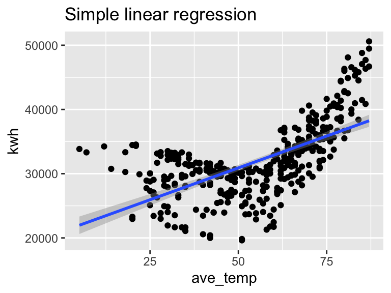
# Segmented regression
ggplot(daily_main, aes(x = ave_temp, y = kwh)) +
geom_point() +
geom_smooth(data = filter(daily_main, ave_temp < 60), # model for heating
method = 'lm', formula = 'y ~ x') +
geom_smooth(data = filter(daily_main, ave_temp >= 60), # model for cooling
method = 'lm', formula = 'y ~ x') +
labs(title = "Segmented regression")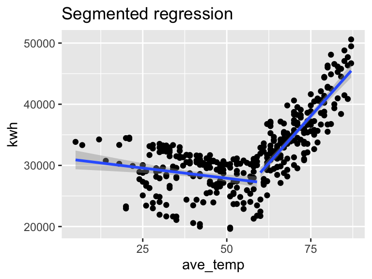
# Quadratic model
ggplot(daily_main, aes(x = ave_temp, y = kwh)) +
geom_point() +
geom_smooth(method = 'lm', formula = 'y ~ x + I(x^2)') +
labs(title = "Quadratic function")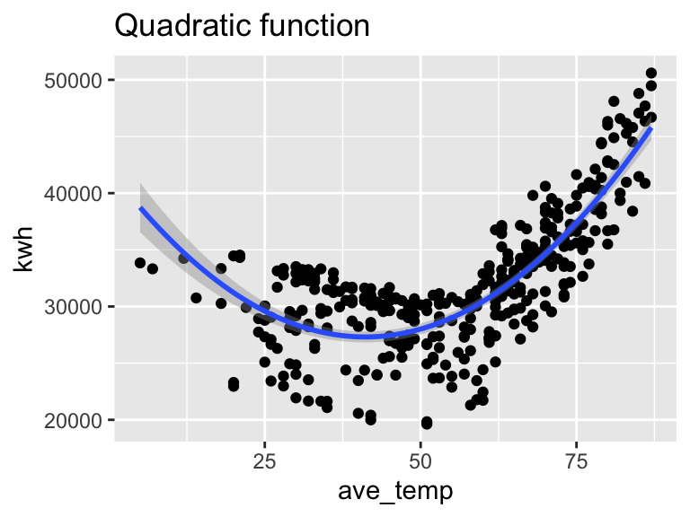
# Smoothed function (Locally Estimated Scatterplot Smoothing)
## This is not a model we are going to learn, but can be helpful to check shape
ggplot(daily_main, aes(x = ave_temp, y = kwh)) +
geom_point() +
geom_smooth(method = "loess")+
labs(title = "Smoothed function")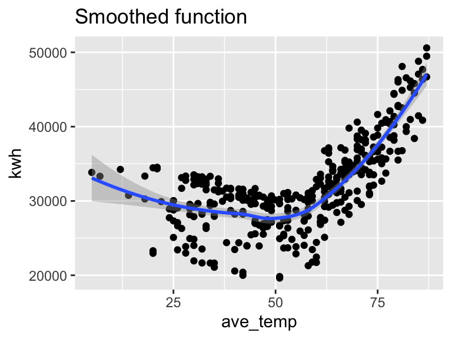
Based on what we found in the single-variable models, I expect that electricity use will be strongly related to temperature in a non-linear fashion, decreasing with temperature during the heating season and increasing with temperature in the cooling season. I also expect that electricity use will be lowest over winter break and highest in the summer, with intermediate usage in the academic year. Finally, I expect electricity use to be slightly lower on the weekend than on weekdays.
# Original linear model
mod_full <- lm(kwh ~ day + period + ave_temp, data = daily_main)
# Segmented regression
mod_seg <- segmented(mod_full, seg.Z = ~ ave_temp, psi = 60)
# Quadratic model
mod_quad <- lm(kwh ~ day + period + ave_temp + I(ave_temp^2), data = daily_main)par(mfrow = c(1, 2)) # This code put two plots in the same window
hist(mod_full$residuals) # Histogram of residuals
plot(mod_full, which = 2) # QQ Plot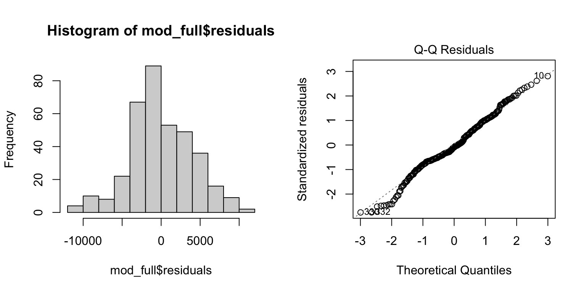
| Version | Author | Date |
|---|---|---|
| e4349ce | maggiedouglas | 2026-04-07 |
boxplot(mod_full$residuals ~ daily_main$day) # Equality of variance across factors
boxplot(mod_full$residuals ~ daily_main$period) # Equality of variance across factors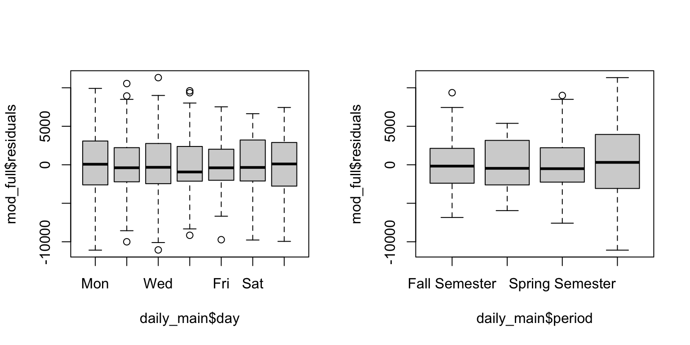
| Version | Author | Date |
|---|---|---|
| e4349ce | maggiedouglas | 2026-04-07 |
plot(mod_full, which = 1) # Residuals vs. Fits plot
acf(mod_full$residuals) # Assess dependence between successive observations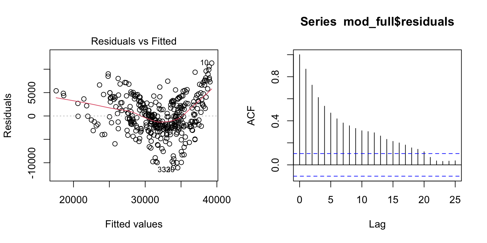
| Version | Author | Date |
|---|---|---|
| e4349ce | maggiedouglas | 2026-04-07 |
vif(mod_full) # Check the variance inflation factor GVIF Df GVIF^(1/(2*Df))
day 1.003419 6 1.000284
period 1.874236 3 1.110378
ave_temp 1.869153 1 1.367170par(mfrow = c(1, 2)) # This code put two plots in the same window
hist(mod_seg$residuals) # Histogram of residuals
plot(mod_seg$residuals ~ mod_seg$fitted.values) # Residuals vs. fits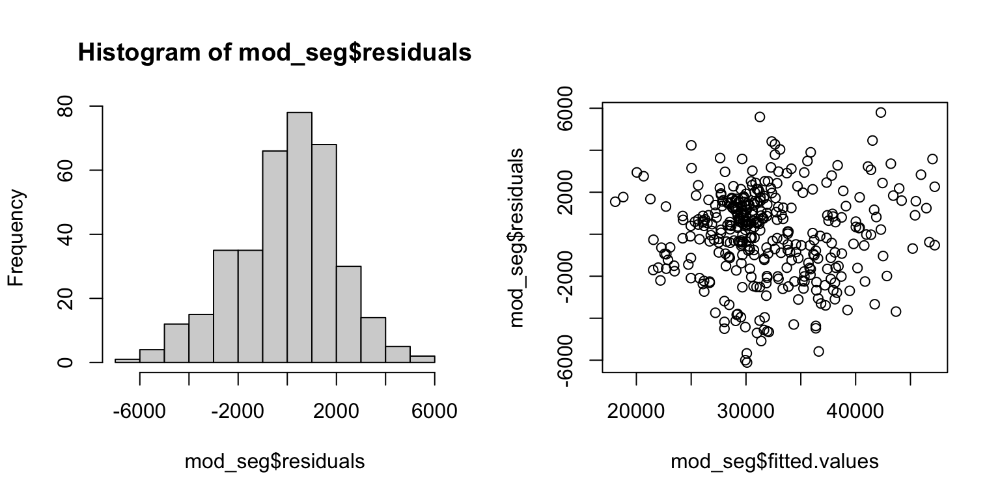
| Version | Author | Date |
|---|---|---|
| e4349ce | maggiedouglas | 2026-04-07 |
boxplot(mod_seg$residuals ~ daily_main$day) # Equality of variance across factors
boxplot(mod_seg$residuals ~ daily_main$period) # Equality of variance across factors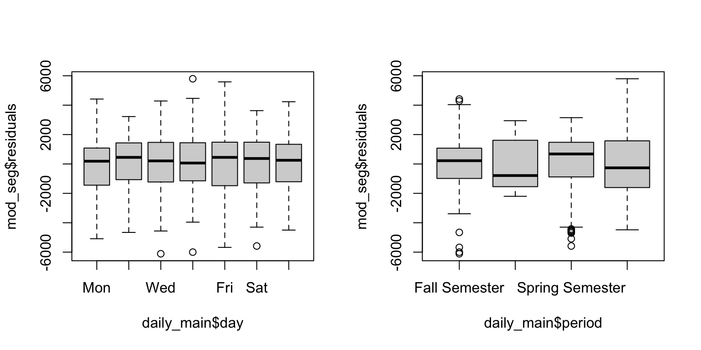
| Version | Author | Date |
|---|---|---|
| e4349ce | maggiedouglas | 2026-04-07 |
acf(mod_seg$residuals) # Assess dependence between successive observations
vif(mod_seg) # Check the variance inflation factor GVIF Df GVIF^(1/(2*Df))
day 1.013662 6 1.001131
period 2.405014 3 1.157496
ave_temp 6.030125 1 2.455631
U1.ave_temp 4.436248 1 2.106240
psi1.ave_temp 3.699911 1 1.923515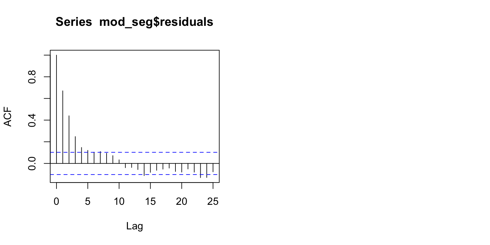
| Version | Author | Date |
|---|---|---|
| e4349ce | maggiedouglas | 2026-04-07 |
par(mfrow = c(1, 2)) # This code put two plots in the same window
hist(mod_quad$residuals) # Histogram of residuals
plot(mod_quad, which = 2) # QQ Plot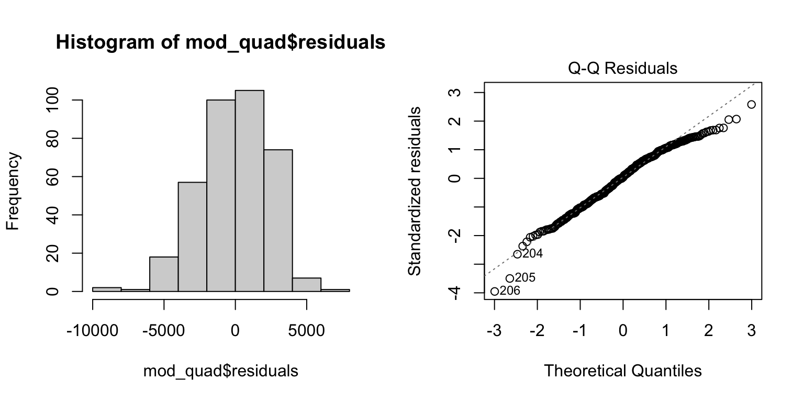
boxplot(mod_quad$residuals ~ daily_main$day) # Equality of variance across factors
boxplot(mod_quad$residuals ~ daily_main$period) # Equality of variance across factors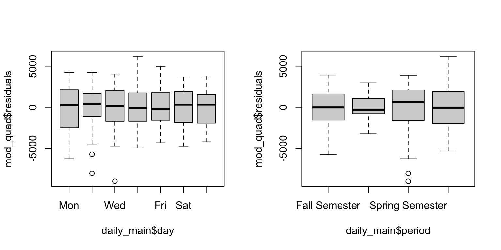
| Version | Author | Date |
|---|---|---|
| e4349ce | maggiedouglas | 2026-04-07 |
plot(mod_quad, which = 1) # Residuals vs. fits
acf(mod_quad$residuals) # Assess dependence between successive observations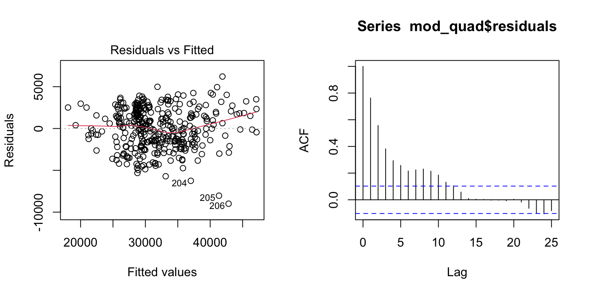
| Version | Author | Date |
|---|---|---|
| e4349ce | maggiedouglas | 2026-04-07 |
vif(mod_quad) # Check the variance inflation factor GVIF Df GVIF^(1/(2*Df))
day 1.005837 6 1.000485
period 2.369457 3 1.154626
ave_temp 36.673927 1 6.055900
I(ave_temp^2) 40.244415 1 6.343849Let’s examine the results for each of our models…
Notice here that we are using a new approach, in order to address the remaining assumptions that some of these models violate (unequal variance and nonindependence).
You will see that many of these lines of code include
vcovHAC() - this is a function that allows us to adjust our
results to account for unequal variance and temporal autocorrelation.
Standard linear regression assumes equal variance and that covariance =
0 (a mathematical way to say that observations are independent). The
vcov in the function stands for “variance-covariance
matrix” - this function estimates the variance and covariance from the
data instead of making simplifying assumptions about them.
HAC stands for “Heteroscedasticity and Autocorrelation
Consistent” estimation which is a fancy way of saying that we account
for both unequal variance among groups and dependence in time.
See below segmented regression for an example of how to report the results.
# ANOVA table corrected for unequal variance/nonindependence
Anova(mod_full, type = "II", vcov = vcovHAC(mod_full))Coefficient covariances computed by vcovHAC(mod_full)Analysis of Deviance Table (Type II tests)
Response: kwh
Df F Pr(>F)
day 6 86.1236 < 2.2e-16 ***
period 3 9.0801 8.333e-06 ***
ave_temp 1 7.9544 0.005067 **
Residuals 354
---
Signif. codes: 0 '***' 0.001 '**' 0.01 '*' 0.05 '.' 0.1 ' ' 1# Adjusted R squared (this doesn't require correction)
summary(mod_full)$adj.r.sq[1] 0.4943815# Tests of coefficients corrected for unequal variance/nonindependence
coeftest(mod_full, vcov = vcovHAC(mod_full))
t test of coefficients:
Estimate Std. Error t value Pr(>|t|)
(Intercept) 23334.149 3273.081 7.1291 5.715e-12 ***
dayTue -283.337 259.203 -1.0931 0.275089
dayWed 67.579 346.409 0.1951 0.845440
dayThu 282.966 227.188 1.2455 0.213767
dayFri -444.370 303.973 -1.4619 0.144663
daySat -3309.613 294.974 -11.2200 < 2.2e-16 ***
daySun -3032.726 273.461 -11.0901 < 2.2e-16 ***
periodWinter Break -6059.166 1434.707 -4.2233 3.065e-05 ***
periodSpring Semester 607.207 1333.658 0.4553 0.649176
periodSummer Break 1364.896 2637.296 0.5175 0.605105
ave_temp 166.805 59.143 2.8203 0.005067 **
---
Signif. codes: 0 '***' 0.001 '**' 0.01 '*' 0.05 '.' 0.1 ' ' 1The outcomes of the segmented model show significant effects of day (F6,352 = 34.6, P < 0.001), period (F3,352 = 55.2, P < 0.001), temperature below 58 deg F (F1,352 = 14.4, P < 0.001), and temperature above 58 deg F (F1,352 = 353.5, P < 0.001). The model was able to explain 87% of the variation in daily electricity use on the main meter (R2 = 0.87).
The estimates from the fitted model suggest that after accounting for other factors, electricity use was fairly similar on all weekdays but ~3% lower on Fridays and ~11% lower on Saturdays and Sundays. Electricity use during spring did not differ significantly from use during fall (P = 0.70). Compared to fall and spring, electricity use during winter break was reduced by ~25%. Interestingly, after accounting for temperature, electricity use over summer break was reduced by ~12%.
The model found a significant non-linear relationship between electricity use and temperature, with a break point at 58 degrees F. During the heating season (temperatures below 58 deg F), electricity use declined by 103 kWh (+/- 15 kWh) per degree F. During the cooling season (temperatures above 58 deg F), electricity use increased by 761 kWh (+/- 24 kWh) per degree F.
# ANOVA table adjusted for unequal variance/nonindependence
Anova(mod_seg, type = "II", vcov = vcovHAC(mod_seg))Coefficient covariances computed by vcovHAC(mod_seg)Analysis of Deviance Table (Type II tests)
Response: kwh
Df F Pr(>F)
day 6 34.583 < 2.2e-16 ***
period 3 55.203 < 2.2e-16 ***
ave_temp 1 14.398 0.0001741 ***
U1.ave_temp 1 353.476 < 2.2e-16 ***
psi1.ave_temp 1 0.000 1.0000000
Residuals 352
---
Signif. codes: 0 '***' 0.001 '**' 0.01 '*' 0.05 '.' 0.1 ' ' 1# Adjusted R squared (this doesn't require correction)
summary(mod_seg)$adj.r.sq[1] 0.8659336# Tests of coefficients adjusted for unequal variance/nonindependence
coeftest(mod_seg, vcov = vcovHAC(mod_seg))
t test of coefficients:
Estimate Std. Error t value Pr(>|t|)
(Intercept) 35007.66960 1315.95158 26.6026 < 2.2e-16 ***
dayTue -269.54354 246.34316 -1.0942 0.2746246
dayWed -467.92469 326.87795 -1.4315 0.1531752
dayThu -616.59416 344.01113 -1.7924 0.0739328 .
dayFri -1008.14844 331.74211 -3.0390 0.0025516 **
daySat -3870.55413 302.86068 -12.7800 < 2.2e-16 ***
daySun -3459.26800 269.42237 -12.8396 < 2.2e-16 ***
periodWinter Break -8197.51039 711.22486 -11.5259 < 2.2e-16 ***
periodSpring Semester -205.94336 533.60613 -0.3859 0.6997695
periodSummer Break -3877.41525 714.27279 -5.4285 1.061e-07 ***
ave_temp -103.41888 27.25482 -3.7945 0.0001741 ***
U1.ave_temp 863.97479 45.95379 18.8009 < 2.2e-16 ***
psi1.ave_temp 0.00000 0.76653 0.0000 1.0000000
---
Signif. codes: 0 '***' 0.001 '**' 0.01 '*' 0.05 '.' 0.1 ' ' 1# For segmented regression, we need an extra step to extract
# the break point + intercepts/slopes
# for the relationships on either side of the break point in temperature
# Again we'll adjust for unequal variance/nonindependence
summary(mod_seg)$psi # extract break point Initial Est. St.Err
psi1.ave_temp NA 57.65835 0.4910027intercept(mod_seg, vcov = vcovHAC(mod_seg)) # intercept for each equation$ave_temp
Est.
intercept1 35008
intercept2 -14808slope(mod_seg, vcov = vcovHAC(mod_seg)) # slopes for each equation$ave_temp
Est. St.Err. t value CI(95%).l CI(95%).u
slope1 -103.42 14.950 -6.9177 -132.82 -74.016
slope2 760.56 23.962 31.7410 713.43 807.680Here is a resource on how to interpret the coefficients for a quadratic term in a regression: https://quantifyinghealth.com/quadratic-term-in-regression/
# ANOVA table adjusted for unequal variance/nonindependence
Anova(mod_quad, type = "II", vcov = vcovHAC(mod_quad))Coefficient covariances computed by vcovHAC(mod_quad)Analysis of Deviance Table (Type II tests)
Response: kwh
Df F Pr(>F)
day 6 35.556 < 2.2e-16 ***
period 3 24.077 3.370e-14 ***
ave_temp 1 28.833 1.434e-07 ***
I(ave_temp^2) 1 47.445 2.604e-11 ***
Residuals 353
---
Signif. codes: 0 '***' 0.001 '**' 0.01 '*' 0.05 '.' 0.1 ' ' 1# Adjusted R squared (this doens't require correction)
summary(mod_quad)$adj.r.sq[1] 0.8195353# Tests of coefficients adjusted for unequal variance/nonindependence
coeftest(mod_quad, vcov = vcovHAC(mod_quad))
t test of coefficients:
Estimate Std. Error t value Pr(>|t|)
(Intercept) 47496.5170 4343.1714 10.9359 < 2.2e-16 ***
dayTue -293.6117 248.8658 -1.1798 0.238875
dayWed -329.9844 329.1146 -1.0026 0.316720
dayThu -142.5408 351.4299 -0.4056 0.685281
dayFri -538.2553 343.0060 -1.5692 0.117490
daySat -3504.7217 313.7179 -11.1716 < 2.2e-16 ***
daySun -3229.6059 307.9665 -10.4869 < 2.2e-16 ***
periodWinter Break -7490.9813 956.5689 -7.8311 5.717e-14 ***
periodSpring Semester -164.8023 670.4083 -0.2458 0.805961
periodSummer Break -3446.9289 1220.7918 -2.8235 0.005019 **
ave_temp -886.4215 165.0816 -5.3696 1.434e-07 ***
I(ave_temp^2) 10.6359 1.5441 6.8880 2.604e-11 ***
---
Signif. codes: 0 '***' 0.001 '**' 0.01 '*' 0.05 '.' 0.1 ' ' 1# Compare R squared for all three models
summary(mod_full)$adj.r.sq[1] 0.4943815summary(mod_seg)$adj.r.sq[1] 0.8659336summary(mod_quad)$adj.r.sq[1] 0.8195353# Compare AIC for all models (lower is better)
AIC(mod_full, mod_seg, mod_quad) df AIC
mod_full 12 7119.558
mod_seg 14 6636.972
mod_quad 13 6744.486dwplot(list(`Period only` = mod_pd,
`Standard LM` = mod_full,
Segmented = mod_seg,
Quadratic = mod_quad)) +
theme_bw() +
labs(x = "Diff. in daily kWh (compared to Monday in Fall)")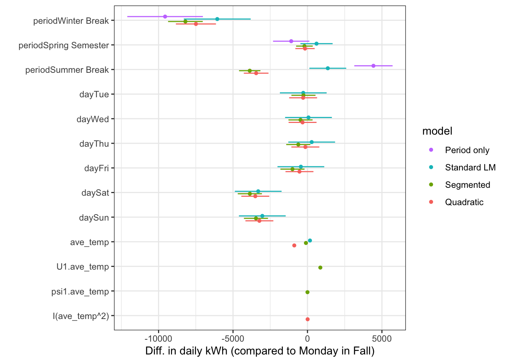
It appears that the segmented model is the best choice for the main meter. This model has the most explanatory power (highest R2 value) and makes sense conceptually; we would expect that electricity use would decrease with temperature during the heating season and increase with temperature during the cooling season. This model reasonably meets all assumptions, except that it still shows some evidence of nonindependence between observations close in time. Fortunately, we generated results that account for this violation, so we can be confident in the final outcomes. Overall, this appears to be a strong statistical model, and the results show that these three factors (outdoor temperature, time of year, and day of the week) explained the vast majority of variation in daily electricity use in buildings on the main meter in fiscal year 2025.
Let’s look a bit more closely at how our estimates change when we estimate the error using a method that accounts for temporal autocorrelation…
We can see in the graph below that the HAC estimation procedure slightly shrinks the error on the weekday terms, but slightly expands the error on the time of year terms.
# Store the coefficient estimates in our original model
coef <- coeftest(mod_seg)
coef_df <- as.data.frame(coef[,]) %>%
rownames_to_column("term") %>%
filter(term != "(Intercept)" & term != "psi1.ave_temp") %>%
mutate(lcb = Estimate - (`Std. Error`*1.96),
ucb = Estimate + (`Std. Error`*1.96))
# Calculate Robust Standard Errors
# Heteroskedasticity and Autocorrelation Consistent (HAC) estimators
coef_rob <- coeftest(mod_seg, vcov = vcovHAC(mod_seg))
coef_rob_df <- as.data.frame(coef_rob[,]) %>%
rownames_to_column("term") %>%
filter(term != "(Intercept)" & term != "psi1.ave_temp") %>%
mutate(lcb = Estimate - (`Std. Error`*1.96),
ucb = Estimate + (`Std. Error`*1.96))
ggplot(data = coef_df) +
geom_point(aes(x = term, y = Estimate), col = "orange") +
geom_errorbar(data = coef_rob_df,
aes(x = term, ymin = lcb, ymax = ucb), width=0.1, col = "darkmagenta") +
geom_errorbar(data = coef_df, aes(x = term, ymin = lcb, ymax = ucb), width=0.1, col = "orange", alpha = 0.5) +
coord_flip() +
theme_bw() +
labs(title = "Comparison of original (orange) and HAC (purple) errors")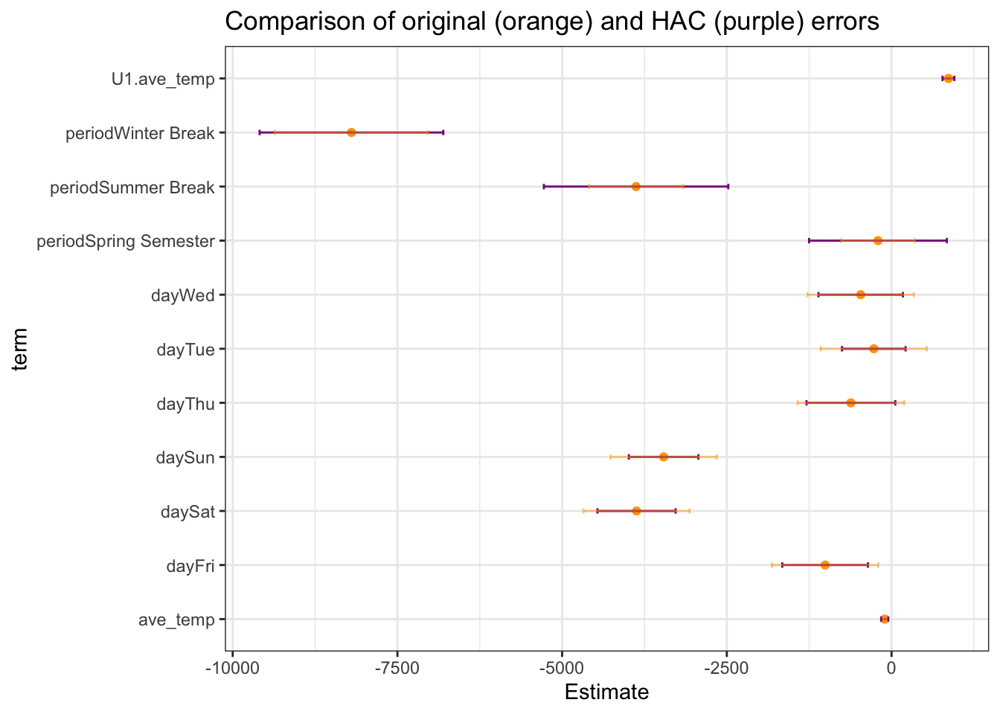
sessionInfo()R version 4.6.0 (2026-04-24)
Platform: x86_64-apple-darwin20
Running under: macOS Ventura 13.7.8
Matrix products: default
BLAS: /Library/Frameworks/R.framework/Versions/4.6-x86_64/Resources/lib/libRblas.0.dylib
LAPACK: /Library/Frameworks/R.framework/Versions/4.6-x86_64/Resources/lib/libRlapack.dylib; LAPACK version 3.12.1
locale:
[1] en_US.UTF-8/en_US.UTF-8/en_US.UTF-8/C/en_US.UTF-8/en_US.UTF-8
time zone: America/New_York
tzcode source: internal
attached base packages:
[1] stats graphics grDevices utils datasets methods base
other attached packages:
[1] modelsummary_2.6.0 dotwhisker_0.8.6 sandwich_3.1-1 lmtest_0.9-40
[5] zoo_1.8-15 car_3.1-5 carData_3.0-6 tseries_0.10-61
[9] segmented_2.2-1 nlme_3.1-169 MASS_7.3-65 lubridate_1.9.5
[13] forcats_1.0.1 stringr_1.6.0 dplyr_1.2.1 purrr_1.2.2
[17] readr_2.2.0 tidyr_1.3.2 tibble_3.3.1 ggplot2_4.0.3
[21] tidyverse_2.0.0 workflowr_1.7.2
loaded via a namespace (and not attached):
[1] gridExtra_2.3 rlang_1.2.0 magrittr_2.0.5
[4] git2r_0.36.2 otel_0.2.0 compiler_4.6.0
[7] getPass_0.2-4 mgcv_1.9-4 callr_3.7.6
[10] vctrs_0.7.3 quadprog_1.5-8 pkgconfig_2.0.3
[13] fastmap_1.2.0 backports_1.5.1 labeling_0.4.3
[16] promises_1.5.0 rmarkdown_2.31 tzdb_0.5.0
[19] xfun_0.59 cachem_1.1.0 litedown_0.10
[22] jsonlite_2.0.0 tinytable_0.17.0 later_1.4.8
[25] parallel_4.6.0 R6_2.6.1 bslib_0.11.0
[28] tables_0.9.35 stringi_1.8.7 RColorBrewer_1.1-3
[31] parallelly_1.48.0 jquerylib_0.1.4 estimability_2.0.0
[34] Rcpp_1.1.1-1.1 knitr_1.51 future.apply_1.20.2
[37] parameters_0.29.2 httpuv_1.6.17 Matrix_1.7-5
[40] splines_4.6.0 timechange_0.4.0 tidyselect_1.2.1
[43] rstudioapi_0.19.0 abind_1.4-8 yaml_2.3.12
[46] codetools_0.2-20 curl_7.1.0 processx_3.9.0
[49] listenv_1.0.0 lattice_0.22-9 quantmod_0.4.29
[52] withr_3.0.3 bayestestR_0.18.1 S7_0.2.2
[55] evaluate_1.0.5 marginaleffects_0.32.0 future_1.70.0
[58] xts_0.14.2 pillar_1.11.1 whisker_0.4.1
[61] checkmate_2.3.4 stats4_4.6.0 insight_1.5.2
[64] generics_0.1.4 TTR_0.24.4 rprojroot_2.1.1
[67] hms_1.1.4 scales_1.4.0 globals_0.19.1
[70] xtable_1.8-8 glue_1.8.1 emmeans_2.0.4
[73] tools_4.6.0 data.table_1.18.4 fs_2.1.0
[76] mvtnorm_1.4-2 grid_4.6.0 datawizard_1.3.1
[79] patchwork_1.3.2 performance_0.17.1 Formula_1.2-5
[82] cli_3.6.6 gtable_0.3.6 sass_0.4.10
[85] digest_0.6.39 farver_2.1.2 htmltools_0.5.9
[88] lifecycle_1.0.5 httr_1.4.8